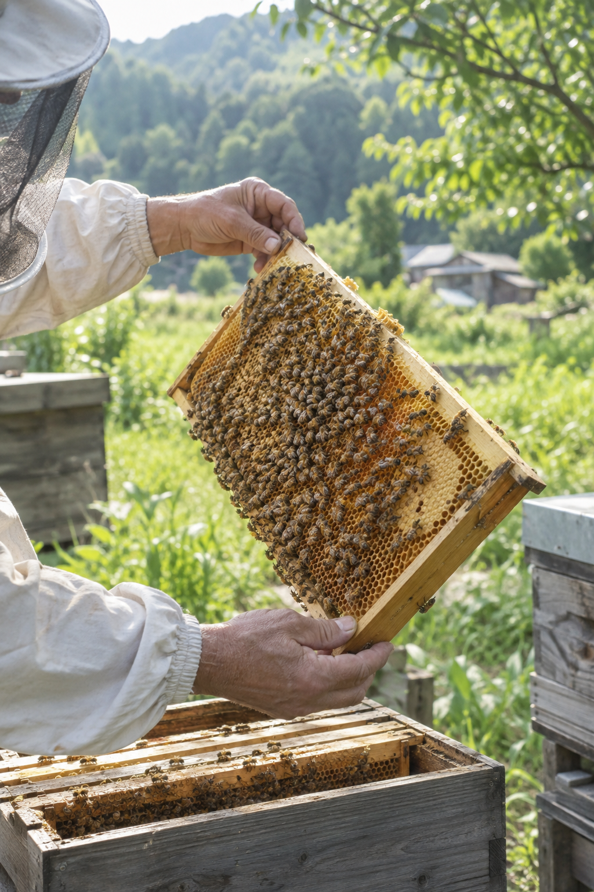

考える
載せたい内容が決まっていなくても大丈夫。お話を聞きながら、魅力と必要な情報を整理します。
SMALL BUSINESS WEB DESIGN
地域のお店、農家、小さな活動のためのホームページ制作。何を載せたらいいか分からないところから、一緒に考えます。

01 / SERVICE
小さく始めて、必要になったら育てられる。今の仕事にちょうどいいホームページをつくります。
載せたい内容が決まっていなくても大丈夫。お話を聞きながら、魅力と必要な情報を整理します。
業種や雰囲気に合わせて、その人らしさが伝わる見た目へ。スマートフォンにも対応します。
完成後の公開設定まで対応します。難しい操作はできるだけ減らし、あとから育てやすい形にします。
02 / WORK
見た目を整えるだけではなく、その場所の空気まで伝わることを大切にしています。

サイトを見る ↗MITORO APIARY
兵庫県三木市・みとろの里山で営む養蜂場。自然、手仕事、蜂蜜の上質さが静かに伝わるサイトを制作しました。
03 / PRICE
最初に内容と金額を確認してから制作します。分からないまま料金が増えることはありません。
ホームページ制作
維持管理
商品販売・予約・管理画面・ページ追加などは、内容を聞いて制作前にお見積もりします。
04 / FLOW
作りたい理由や今困っていることを、分かる範囲で教えてください。
必要な内容、雰囲気、料金を一緒に確認します。
まず全体の雰囲気が分かる形をつくり、実際に見てもらいます。
文章や写真を整えて完成。公開設定まで行います。
05 / CONTACT
まだ内容が決まっていなくても大丈夫です。
「こんなん作れる？」くらいから、お気軽にどうぞ。